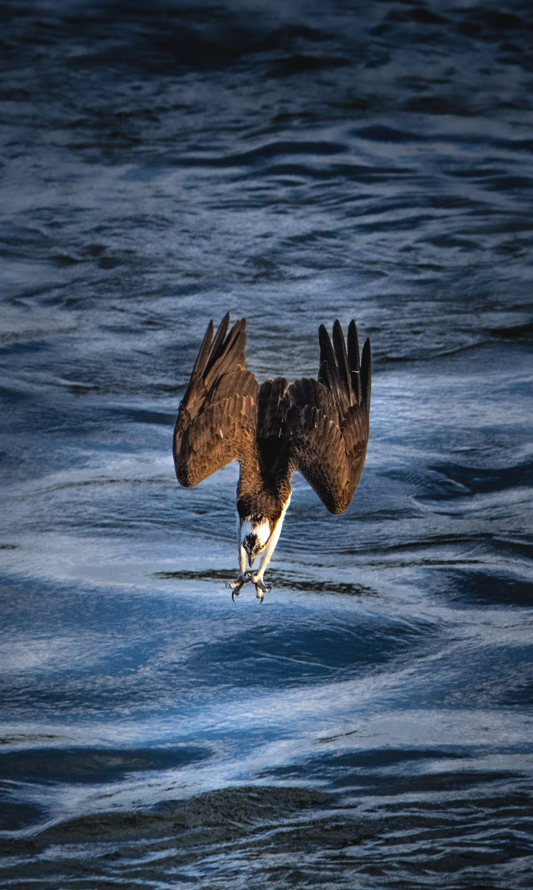

Clint Humphrey is a wildlife photographer working with a Nikon Z 8 and a 150–600mm lens — the kind of long glass that turns a distant osprey into a portrait.
His work concentrates on birds of prey at the decisive moment: the dive, the strike, the impossible geometry of wings at full extension. These are not lucky snapshots. They are early mornings, fast shutter speeds, and hundreds of frames for the one that holds together.
Every print on this site is made from Clint’s own original files, printed to order by a professional lab, and shipped directly to you. When you hang one of these, you’re hanging the actual frame — not a stock photo, not a composite.